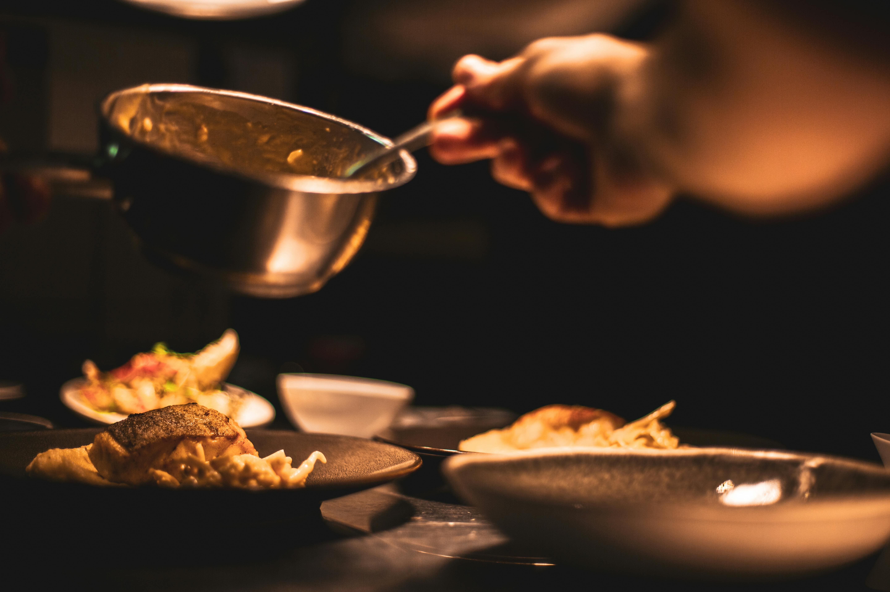
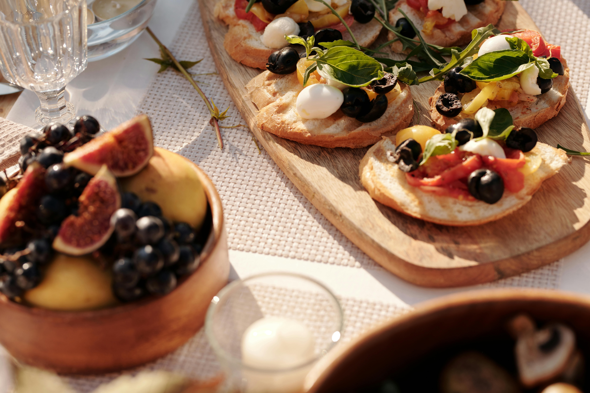
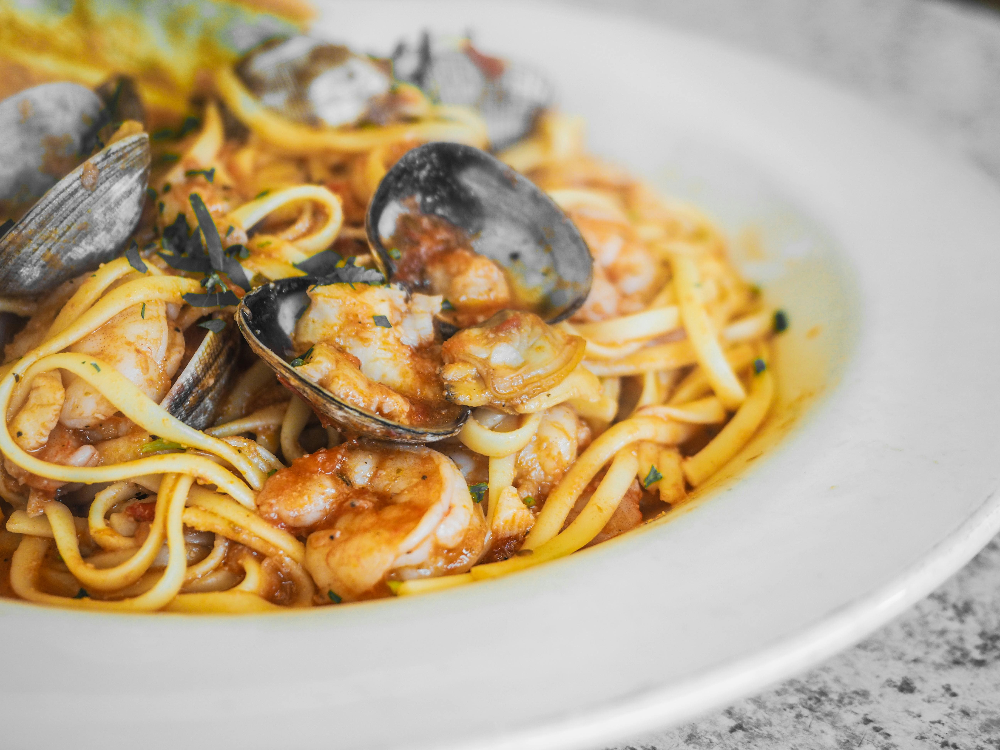
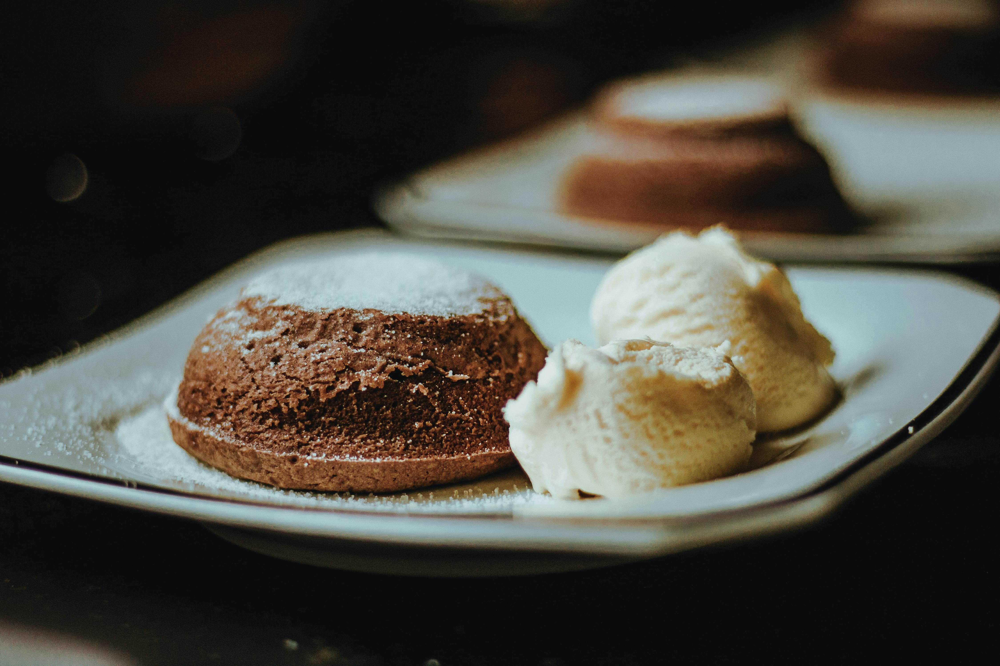

El Arte de la Coherencia Gastronómica
Bienvenidos a un espacio diseñado para los amantes del bienestar, el orden y la claridad culinaria. A través de este menú de autor en tres pasos cuidadosamente seleccionados, los invitamos a descubrir una experiencia culinaria premium y orgánica, donde la simplicidad técnica realza la pureza y los aromas sofisticados de cada ingrediente.
Entrada: Bruschetta de Higos y Jamón Ibérico
Una combinación sofisticada de texturas crujientes, el dulzor natural del higo fresco y la salinidad premium del jamón de bellota sobre una base de queso crema untuoso.

Ficha Técnico
- Tiempo de preparación: 15 minutos
- Dificultad: Baja
- Porciones: 2 personas
Ingredientes
- 4 rodajas de pan de masa madre.
- 4 higos frescos maduros.
- 100g de jamón ibérico premium.
- 100g de queso de cabra untable o queso crema.
- Hojas de rúcula fresca.
- Reducción de aceto balsámico y aceite de oliva.
Preparación
- Tostar las rodajas de pan de masa madre con un hilo de aceite de oliva hasta que estén doradas y crujientes.
- Untar una capa generosa de queso de cabra sobre cada una de las tostadas tibias.
- Lavar bien los higos y cortarlos en cuartos. Disponerlos estéticamente sobre el queso.
- Colocar de forma aireada las fetas de jamón ibérico entrelazadas con los higos.
- Decorar con unas hojas de rúcula y terminar el plato con hilos de reducción de balsámico.
Plato Principal: Fettuccine Nero con Mariscos
Pasta fresca al huevo teñida con auténtica tinta de calamar, salteada con mariscos seleccionados en una emulsión delicada de vino blanco, ajo y aceite de oliva.

Ficha Técnica
- Tiempo de preparación: 45 minutos
- Dificultad: Intermedia
- Porciones: 2 personas
Ingredientes
- 200g de fettuccine nero.
- 150g de langostinos limpios.
- 100g de calamares cortados en anillos.
- 2 dientes de ajo picados finamente.
- 1/2 vaso de vino blanco seco.
- Aceite de oliva extra virgen, sal, pimienta y ciboulette fresco.
Preparación
- En una sartén amplia, dorar el ajo picado en aceite de oliva a fuego medio.
- Agregar los mariscos y saltearlos por dos minutos hasta que tomen color.
- Verter el vino blanco para desglasar y dejar reducir el alcohol durante 3 minutos.
- Hervir la pasta en abundante agua salada hasta que esté al dente, luego escurrir.
- Volcar la pasta en la sartén, agregar un cucharón del agua de cocción y saltear para ligar la salsa.
Postre: Volcán de Chocolate Amargo
Un clásico de la repostería de alta gama. Exterior firme de bizcocho esponjoso realizado con chocolate al 70% de cacao y un corazón líquido tibio e irresistible.

Ficha Técnica
- Tiempo de preparación: 25 minutos
- Dificultad: Intermedia
- Porciones: 2 personas
Ingredientes
- 100g de chocolate amargo (70% cacao).
- 90g de manteca de primera calidad.
- 2 huevos enteros y 2 yemas.
- 40g de azúcar impalpable.
- 35g de harina de trigo común.
Preparación
- Derretir el chocolate picado junto con la manteca a baño María o en microondas.
- En un recipiente aparte, batir los huevos, las yemas y el azúcar hasta que blanqueen.
- Incorporar el chocolate fundido a los huevos de forma envolvente y luego sumar la harina tamizada.
- Verter la mezcla en moldes individuales previamente enmantecados y espolvoreados con cacao.
- Hornear a 200°C durante exactamente 8 o 9 minutos. Desmoldar templado y servir de inmediato.